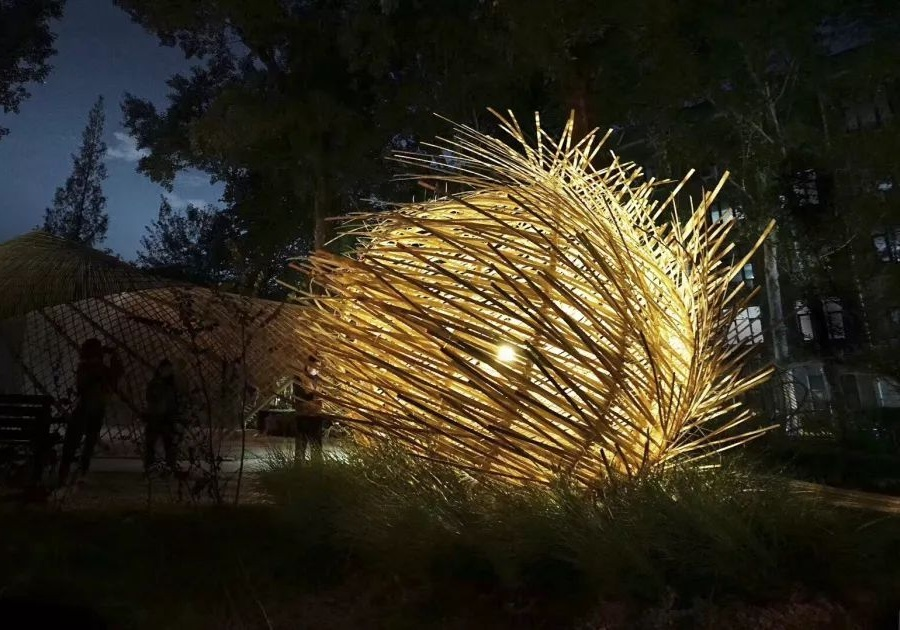
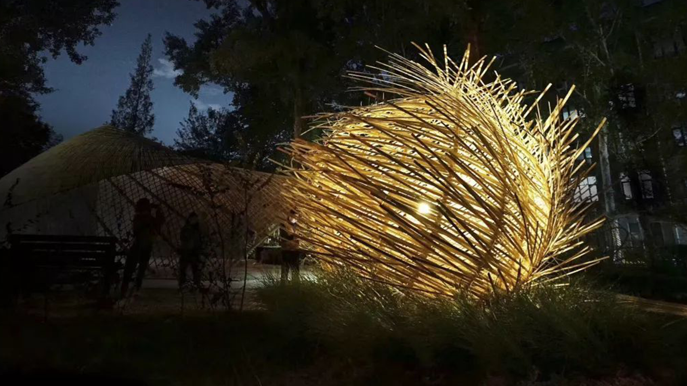
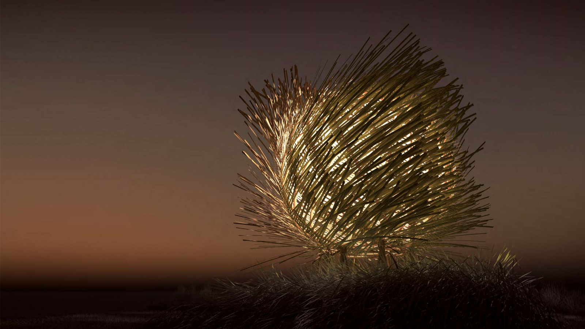
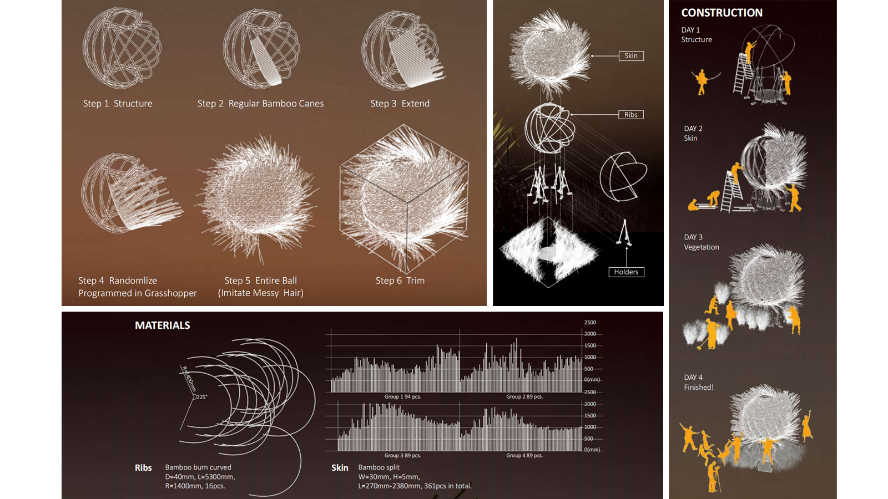

Design
Bamboo Garden: After Review
Under pressure, staying up every three or five days drawing has become the daily life of architecture students. This bamboo-built pavilion imitated the messy hair of a student that had been working the whole night. The form of the pavilion was adjusted during the construction process to increase the possibility of interaction. The fabrication was highly efficient and finished in 4 days.


